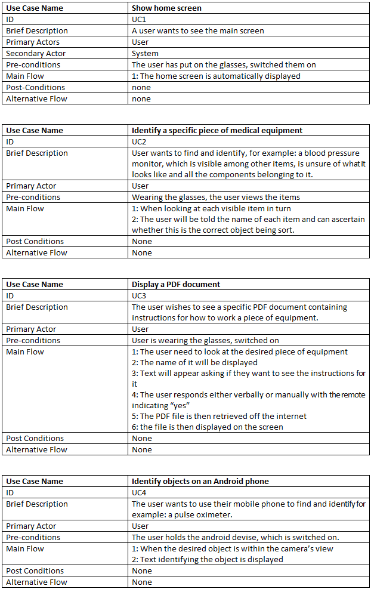

User cases
Use Cases: Considered
Here are details of some of the use cases features we considered:
Visual Selection of desired medical item to be found and identified: This feature could work as an aid to helping the user recognise certain specialist medical equipment. A small picture of the item in question could be selected and appear in the corner of the screen, highlighted so the user can easily understand what it looks like without any further specialist knowledge. The item is then searched for and identified, easy for the viewer/wearer to see that it is the same item as depicted. The user can switch to another picture of other items in the database of those stored and capable of being identified. This feature was implemented in the first prototype and worked well, but it was felt to be fairly redundant and unnecessary, creating a more cluttered view.
A Scrolling Menu of Key Points Related to the Object: Upon identification of an object, further information stored in the database about that item could be accessed via a scrolling menu, to be operated by the hand held controller. Again this seemed like an unnecessary further complication and proved not to be very user friendly, so the idea was put on hold, with possible future consideration in a more simplified form.
Use Case: Implemented
Our brief for the app was quite specific, we needed to produce an app that fulfilled the project brief with little room for choice and needed to include the following essential features.
Real time object recognition: The user by wearing the glasses can identify a variety of items both general and, as requested, of a medical nature to aid in the understanding, identification and use of that item. To fulfil the brief that it must be geared towards medical items we purchased a number of sample pieces of commonly used equipment: a blood pressure monitor, a pulse oximeter/blood oxygen meter, infrared thermometer and an otoscope (for ear examinations). These were handy to have at hand to train the prototypes to recognise and use as test objects. We also felt we needed more specialist equipment so visited Great Ormond Street Hospital where we were given access to photograph an enteral nutrition pump,
Access to information to help the user with operation of the item: We incorporated a way to access PDF files via the cloud that can be viewed on the glasses screen.
Android compatibility: The client was keen for us to make sure the app could also be used on an android enabled smart phone as well as the Epson Moverio smart glasses for which it is designed. This is both convenient and flexible for the user, who, with or without access to a pair of Epson Smart Glasses (which are very expensive, we know because we ended up buying our own also!) can still use the app with most ordinary smart phones by simply holding up the phone to the objects where the built in camera will detect the objects and text labelling it will be displayed on the phone screen on exactly the same way as it is on the smart glasses screen. Of course this method of using the app on a smart phone will result in losing one of the main key features: “hands free” but still needed to be included in our solution to provide the extra option of multi devise flexibility.
Use Cases
Use Case Diagram